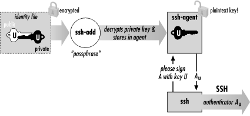
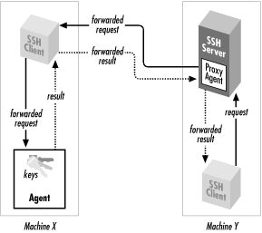
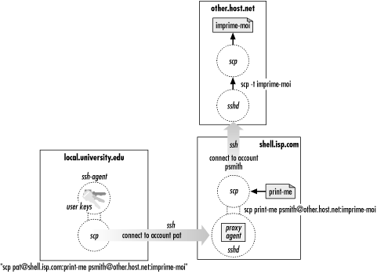

|  |
2.5. The SSH Agent
Each time you run ssh or scp with public-key authentication, you have to retype your passphrase. The first few times you might not mind, but eventually this retyping gets annoying. Wouldn't it be nicer to identify yourself just once and have ssh and scp remember your identity until further notice (for example, until you log out), not prompting for your passphrase? In fact, this is just what an SSH agent does for you. An agent is a program that keeps private keys in memory and provides authentication services to SSH clients. If you preload an agent with private keys at the beginning of a login session, your SSH clients won't prompt for passphrases. Instead, they communicate with the agent as needed. The effects of the agent last until you terminate the agent, usually just before logging out. The agent program for SSH1, SSH2, and OpenSSH is called ssh-agent. Generally, you run a single ssh-agent in your local login session, before running any SSH clients. You can run the agent by hand, but people usually edit their login files (for example, ~/.login or ~/.xsession) to run the agent automatically. SSH clients communicate with the agent via the process environment,[11] so all clients (and all other processes) within your login session have access to the agent. To try the agent, type:[11]In Unix, they talk to the agent over a named pipe whose filename is stored in an environment variable. [Section 6.3.2, "Starting an Agent"]
where SHELL is the environment variable containing the name of your login shell. Alternatively, you could supply the name of any other shell, such as sh, bash, csh, tcsh, or ksh. The agent runs and then invokes the given shell as a child process. The visual effect is simply that another shell prompt appears, but this shell has access to the agent. Once the agent is running, it's time to load private keys into it using the ssh-add program. By default, ssh-add loads the key from your default identity file:$ ssh-agent $SHELL
Now ssh and scp can connect to remote hosts without prompting for your passphrase. Figure 2-3 shows the process.$ ssh-add Need passphrase for /u/you/.ssh/identity ('Your Name <you@local.org>'). Enter passphrase: ************ Identity added: /u/you/.ssh/identity ('Your Name <you@local.org>').

Figure 2-3. How the SSH agent works
ssh-add reads the passphrase from your terminal by default or optionally from standard input noninteractively. Otherwise, if you are running the X Window System with the DISPLAY environment variable set, and standard input isn't a terminal, ssh-add reads your passphrase using a graphical X program, ssh-askpass. This behavior is useful when calling ssh-add from X session setup scripts.[12][12]To force ssh-add to use X to read the passphrase, type ssh-add < /dev/null at a command line.ssh-add has further capabilities, particularly in SSH2, and can operate with multiple identity files. [Section 6.3.3, "Loading Keys with ssh-add"] For now, here are a few useful commands. To load a key other than your default identity into the agent, provide the filename as an argument to ssh-add:
You can also list the keys the agent currently holds:$ ssh-add my-other-key-file
delete a key from the agent:$ ssh-add -l
or delete all keys from the agent:$ ssh-add -d name-of-key-file
$ ssh-add -D
WARNING: When running an SSH agent, don't leave your terminal unattended while logged in. While your private keys are loaded in an agent, anyone may use your terminal to connect to any remote accounts accessible via those keys, without needing your passphrase! Even worse, a sophisticated intruder can extract your keys from the running agent and steal them. If you use an agent, make sure to lock your terminal if you leave it while logged in. You can also use ssh-add -D to clear your loaded keys and reload them when you return. In addition, ssh-agent2 has a "locking" feature that can protect it from unauthorized users. [Section 6.3.3, "Loading Keys with ssh-add"]
2.5.1. Other Uses For Agents
Because ssh and rsh command lines have such similar syntax, you naturally might want to replace rsh with ssh. Suppose you have an automation script that uses rsh to run remote processes. If you use ssh instead, your script prompts for passphrases, which is inconvenient for automation. If the script runs ssh many times, retyping that passphrase repeatedly is both annoying and error-prone. If you run an agent, however, the script can run without a single passphrase prompt. [Section 11.1, "Unattended SSH: Batch or cron Jobs"]2.5.2. A More Complex Passphrase Problem
In our running example, we copied a file from the remote to the local host:In fact, scp can copy a file from remote host shell.isp.com directly to a third host running SSH on which you have an account named, say, "psmith":$ scp pat@shell.isp.com:print-me imprime-moi
Rather than copying the file first to the local host and then back out again to the final destination, this command has shell.isp.com send it directly to other.host.net. However, if you try this, you will run into the following problem:$ scp pat@shell.isp.com:print-me psmith@other.host.net:imprime-moi
What happened? When you run scp on your local machine, it contacts shell.isp.com and internally invokes a second scp command to do the copy. Unfortunately, the second scp command also needs the passphrase for your private key. Since there is no terminal session to prompt for the passphrase, the second scp fails, causing the original scp to fail. The SSH agent solves this problem: the second scp command simply queries your local SSH agent, so no passphrase prompting is needed. The SSH agent also solves another more subtle problem in this example. Without the agent, the second scp (on shell.isp.com) needs access to your private key file, but the file is on your local machine. So you have to copy your private key file to shell.isp.com. This isn't ideal; what if shell.isp.com isn't a secure machine? Also, the solution doesn't scale: if you have a dozen different accounts, it is a maintenance headache to keep your private key file on all of them. Fortunately, the SSH agent comes to the rescue once again. The remote scp process simply contacts your local SSH agent, authenticates, and the secure copy proceeds successfully, through a process called agent forwarding.$ scp pat@shell.isp.com:print-me psmith@other.host.net:imprime-moi Enter passphrase for RSA key 'Your Name <you@local.org>': ************ You have no controlling tty and no DISPLAY. Cannot read passphrase. lost connection
2.5.3. Agent Forwarding
In the preceding example, the remote instance of scp has no direct access to your private key, since the agent is running on the local host, not the remote. SSH provides agent forwarding [Section 6.3.5, "Agent Forwarding"] to address this problem. When agent forwarding is turned on,[13] the remote SSH server masquerades as a second ssh-agent as shown in Figure 2-4. It takes authentication requests from your SSH client processes there, passes them back over the SSH connection to the local agent for handling, and relays the results back to the remote clients. In short, remote clients transparently get access to the local ssh-agent. Since any programs executed via ssh on the remote side are children of the server, they all have access to the local agent just as if they were running on the local host.[13]It is on by default in SSH1 and SSH2, but off in OpenSSH.

Figure 2-4. How agent forwarding works
In our double-remote scp example, here is what happens when agent forwarding comes into play (see Figure 2-5):- You run the command on your local
machine:
$ scp pat@shell.isp.com:print-me psmith@other.host.net:imprime-moi
- This scp process contacts your local agent and authenticates you to shell.isp.com.
- A second scp command is automatically launched on shell.isp.com to carry out the copy to other.host.net.
- Since agent forwarding is turned on, the SSH server on shell.isp.com poses as an agent.
- The second scp process tries to authenticate you to other.host.net by contacting the "agent" that is really the SSH server on shell.isp.com.
- Behind the scenes, the SSH server on shell.isp.com communicates with your local agent, which constructs an authenticator proving your identity and passes it back to the server.
- The server verifies your identity to the second scp process, and authentication succeeds on other.host.net.
- The file copying occurs.

Figure 2-5. Third-party scp with agent forwarding
Agent forwarding works over multiple connections in a series, allowing you to ssh from one machine to another, and then to another, with the agent connection following along the whole way. These machines may be progressively less secure, but since agent forwarding doesn't send your private key to the remote host but rather relays authentication requests back to the first host for processing, your key stays safe. |  | |
| 2.4. Authentication by Cryptographic Key |  | 2.6. Connecting Without a Password or Passphrase |